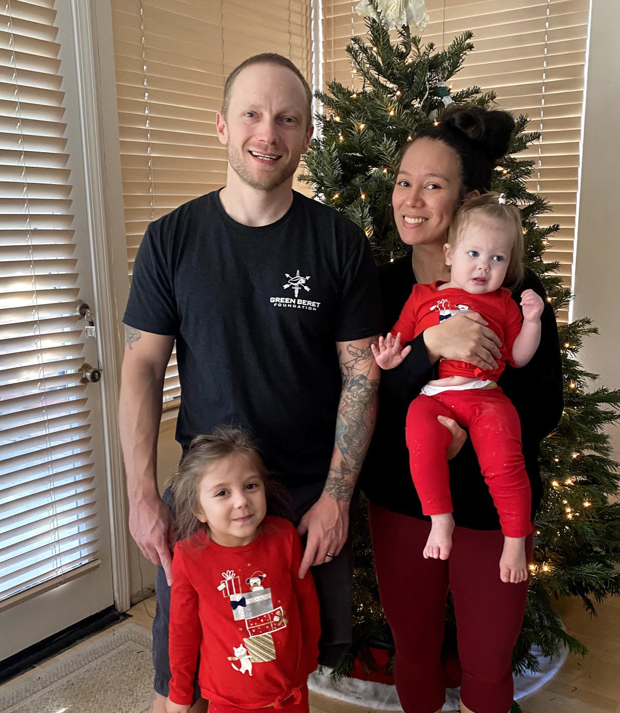
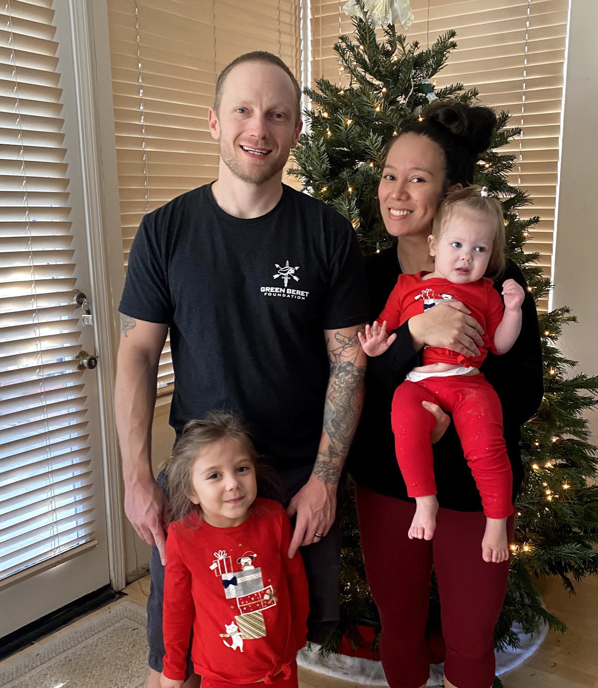

When people talk about true love generally you think of a ‘happily ever after’ story, where the prince and princess ride off into the sunset. I think that’s bullshit, real life isn’t that easy in my experience. True love to me is the following.
- Finding someone that will challenge you to make you a better person every single day.
- Finding someone that will give you another perspective in life.
- Finding someone who can surface feelings of love that you never knew existed.
- Finding someone you can look at every day and say ‘I can’t possibly imagine my life without them'.
- Finding someone that will make you whole.
We’ve been together 9 years now and I can look back and say that I am a significantly better person than I was before I met you. The amount of love that I feel daily is far more than at any other point in my life. Baby, you truly make me whole and I love you more than anything. I know I don’t express my feelings all the time, but you need to know that I love you now more than ever. Diamonds are made by extreme pressure, this is how I think of our relationship. We’ve been forged in the fire of life, and our bond is stronger than the Blizzard algo that keeps you in Bronze (that’s strong!).
Just looking back at the ride we’ve had together bring tears to my eyes. Looking at our babies and our family I just can’t believe how lucky I am to have this life, a life that would not be possible without you baby. To me, our life is what defines what true love really is. Sure we fight sometimes, and we’ve been through some really tough times, but this shared journey through hardship is what makes us strong.
I am the luckiest guy in the world, actually in all the Universe. One day when we're old we can sit down and write a story about our life together. We will sell that story to a movie producer that will make the next generation "Notebook" (Laughing), and we'll make billions. Back to reality, I would never sell out our love by the way... I never imagined that I would end up with someone like you baybay. You are the most special person in my life.

 
